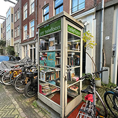
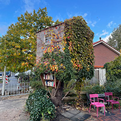
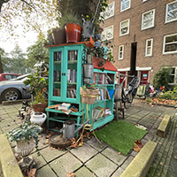

Welkom op mijn pagina over de lokale buurt biebliotheekjes van Amsterdam. Op deze pagina ga ik jullie meenemen langs een aantal van de mooiste en leukste buurt biebjes van Amsterdam!

#1 De Telefooncel
Boomstraat 67
De Telefoon cel komt voor mij op nummer 1. Niet alleen omdat die prachtig uitziet, maar ook omdat het aanbod aan boeken enorm groot is.

#2 De Boom Hut
Pasteurstraat 11
De boomhut komt voor mij op de 2e plek. Het is een prachtig kasje en een prachtige antourage
